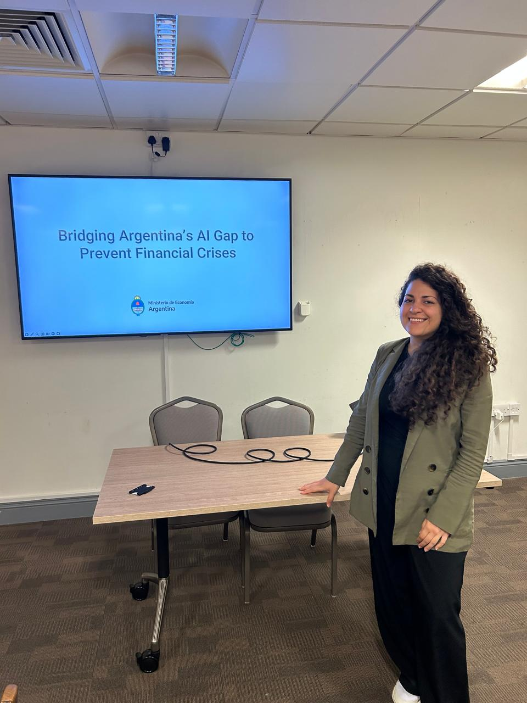

Presenter: Ana Cristina Becker, MSc student at LSE
GC LH Seminar Room 2
7:00 PM - 8:00 PM, 24th June 2025
Abstract: Artificial intelligence has become indispensable in finance, with over 80% of companies using it to drive decision-making and manage risk. For governments, however, the adoption of AI in financial crisis prevention remains limited, leading to information asymmetries and outdated data management that hinder timely responses to emerging risks. This presentation will explore how public policy can support the integration of AI in governmental frameworks to monitor exogenous risks—like global market shocks—and endogenous threats stemming from internal economic imbalances. By advancing AI-driven tools for real-time risk assessment, governments can create a proactive crisis-prevention strategy, aligning public sector capabilities with those of the private sector to safeguard economic stability.
Speaker Biography: Ana is a political scientist, Master in Public Policy (MPP) candidate at LSE, and Chevening Scholar from Argentina, where she worked as a Chief of Staff and Advisor in the National Congress. She is passionate about bridging the gap between science and government and implementing technology and innovation to reduce inequality. You will also find her enjoying tennis, football, yoga or exploring how art connects us to social issues and human nature. Originally from northern Argentina, she moved to Bs As to graduate from the University of San Andrés.